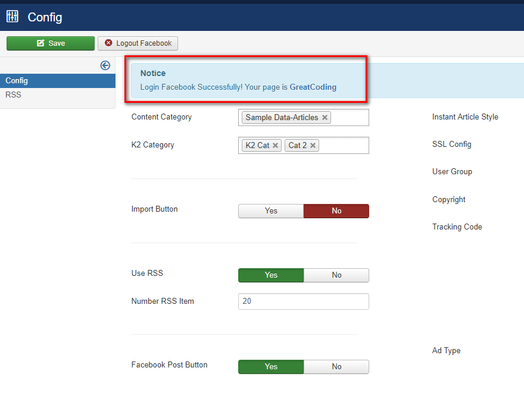
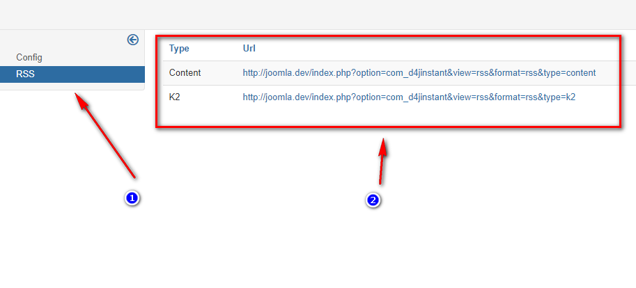

Sign up for Instant Articles
1. You have to sign up Instant Article first. Click here.
2. Choose your fanpage
Create a Facebook app
1. Go to Facebook for Developer and login your Facebook Account.
2. Add a new app
3. Choose Website platform
4. Click "Skip and Create App ID"
5. Fill the form and hit "Create App ID" button

6. Submit the captcha and you will be redirected to App Dashboard. Cick setting.
7. Cick "Show" to get app secret
8. Click add platform
9. Choose Website
10. Put your site url and click "Save changes"
11. Go to App Review.
12. Click Yes to make your app live.
13. Add Facebook Login to your App
Install Instant Articles Plugin and Component
1. Login to your Joomla Adminstrator Dashboard.
Ex: http://yourdomain.com/administrator
2. Go to extensions installation page.
3. "Hit Browse..." button.

4. Choose file com_d4jinstant.zip.
5. Hit "Upload & Install" button.
6. Successful Installation.
7. Do the same from Step 1 with file plg_d4jinstant.zip.
Setup Component
1. Login to your Joomla Adminstrator Dashboard.
Ex: http://yourdomain.com/administrator
2. Go to Facebook Instant Articles Component
3. Put your App ID, Secret to the form.
4. You'll be redirected, follow these steps ...
5. Choose Page that you want to publish instant article.
5. Installation successful.

Configuration
1. Let's see all configurations we have.
Content Categories: Set the com_content categories that you want to import as Instant Article.
K2 Categories: Set the K2 categories.
Import button: Enable button import Instant Article.

Use Rss: Use RSS or not. See more how RSS is used for Instant Article at here.
Facebook Post Button: Post your article to your Facebook Fanpage.
Instant Article Style: Put your instant article style name. See more about Instant Article Style
SSL Config: Use https or not in Instant Article. Just let plugin automatic detect config from joomla. In some case, your ssl status is not configured by joomla, you should choose manually.
Tracking code: Put your tracking code here.
User group: Set User Group that you want to access Import Instant Article function, and Post To Facebook Function.
2. Ads and option.
Ad Type: Choose your ad type. Ad will appear at bottom of the Instant Article. Set none for not using Ad.
Ad Size: Choose your ad size.
Placement ID: Put your Facebook's Audience Network Placement ID.
Custom Iframe Url: Put your custom Iframe url here.
Custom Embed Code: Put your custom Embed code here.
Publish Facebook Instant Articles
1. Go back to your Facebook Page.
2. Go to Tools of Facebook Instant Articles.
3. Put your domain and hit "Claim URL".
4. Now back to Articles Page in Joomla Aministrator Dashboard
5. Publish your Instant Article.
There are two ways to publish your Instant Article:
A. Edit an exist article and let D4JInstant automatic import Instant Articel.
B. Use RSS Feed
- Go to RSS sidebar. Copy the RSS Url and follow this guide.

6. Back to Facebook Page. Go to Product Articles manager page.
7. Choose an Instant Articles to publish.
8. Hit Edit of live article.

9. Copy this link.
10. Publish that link to your Facebook Page.
11. Open your Page by Facebook App, click to this link, and see how it works :).